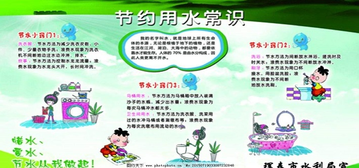
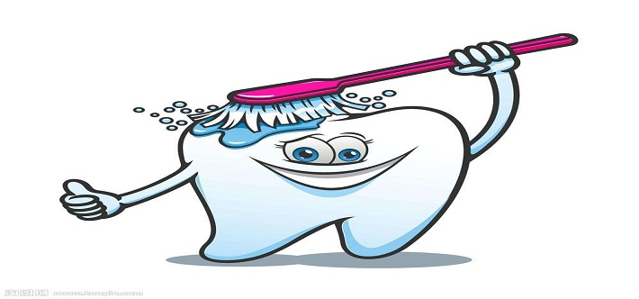

长期以来，人们普遍认为水是“取之不尽，用之不竭”的，不知道爱惜，而浪费挥霍。当知道我国水资源人均量并在丰富，地区分布不均匀，年内变化莫测，年际差别很大，再加上污染，使水资源更加紧缺，自来水其实来之不易。节水要从爱惜水做起，牢固地树立“节约水光荣，浪费水可耻”的信念，才能时时处处注意节水。
养成好习惯 据分析，家庭只要注意改掉不良的习惯，就能节水70%左右。与浪费水有关的习惯很多，比如：用抽水马桶冲掉烟头和碎细废物；为了接一杯凉水，而白白放掉许多水；先洗土豆、胡萝卜后削皮，或冲洗之后再择蔬菜；用水时的间断（开门接客人，接电话，改变电视机频道时），未关水龙头；停水期间，忘记关水龙头；洗手、洗脸、刷牙时，让水一直流着；睡觉之前、出门之前，不检查水龙头；设备漏水，不及时修好。
用节水器具 家庭节水除了注意养成良好的用水习惯以外，采用节水器具很重要，也最有效。有的人宁可放任自流，也不肯更换节水器具，其实，这么多交水费长期下来是不合算的。节水器具种类繁多，有节水型水箱、节水龙头、节水马桶等。从原理来说，有机械式（扳手、按钮的）和全自动（电、磁感应和红外线遥控）两类。
查漏塞流 在家中“滴水成河”并非开玩笑。要经常检查家中自来水管路。防微杜渐，不要忽视水龙头和水管节头的漏水。发现漏水，要及时请人或自己动手修理，堵塞流水。一时修不了的漏水，干脆随时用总节门暂时控制水流也好。管好水龙头，把水龙头的水门拧小一半，漏水流量自然也小了，同样的时间里流失水量也减少一半。

“洗衣节水小窍门：”
（1）洗衣机洗少量衣服时，水位定得太高，衣服在高水里飘来飘去，互相之间缺少摩擦，反而洗不干净还浪费水。
（2）衣服太少不洗，等多了以后集中起来洗，也是省水的办法。
（3）如果将漂洗的水留下来做下一批衣服洗涤水用，一次可以省下30-40升清水。
长期以来，人们普遍认为水是“取之不尽，用之不竭”的，不知道爱惜，而浪费挥霍。事实上，水资源日益紧缺，而我市的城市供水工作更是在严重缺水的边缘艰难度日，自来水来之不易。
人不可一日无水，水是生命之源，珍惜水就是珍惜自己的生命！在此，我们介绍一些日常生活中的节水常识：

"刷牙:"
浪费：不间断放水，30秒，用水约6升。
节水：口杯接水，3口杯，用水0.6升。三口之家每日两次，每月可节水486升。
1、淘米水洗菜，再用清水清洗，不仅节约了水，还有效地清除了蔬菜上的残存农药；
2、洗衣水洗拖帕、帚地板、再冲厕所。第二道清洗衣物的洗衣水擦门窗及家具、洗鞋袜等；
3、大、小便后冲洗厕所，尽量不开大水管冲洗，而充分利用使用过的“脏水”；
4、夏天给室内外地面洒水降温，尽量不用清水，而用洗衣之后的洗衣水；
5、自行车、家用小轿车清洁时，不用水冲，改用湿布擦，太脏的地方，也宜用洗衣物过后的余水冲洗；
6、家庭浇花，宜用淘米水、茶水、洗衣水等；
7、家庭洗涤手巾、小对象、瓜果等少量用水。宜用盆子盛水而不宜开水龙头放水冲洗；
8、水龙头使用时间长有漏水现象，可用装青霉素的小药瓶的橡胶盖剪一个与原来一样的垫圈放进去，可以保证滴水不漏；
9、将卫生间里水箱的浮球向下调整2厘米，每次冲洗可节省水近3kg；按家庭每天使用四次算，一年可节药水4380kg；
10、洗菜：一盆一盆地洗，不要开着水龙头冲，一餐饭可节省50kg；
11、淋浴：如果您关掉龙头擦香皂，洗一次澡可节水60kg；
12、手洗衣服：如果用洗衣盆洗、清衣服则每次洗、清衣比开着水龙头节省水200kg；
13、用洗衣机洗衣服：建议您满桶再洗，若分开两次洗，则多耗水120kg；
14、洗车：用抹布擦洗比用水龙头冲洗，至少每次可节水400kg；
15、冲厕所：如果您使用节水型设备，每次可节水4一5kg；
16、洗地板：用拖把擦洗，可比用水龙头冲洗每次每户可节水200kg以上